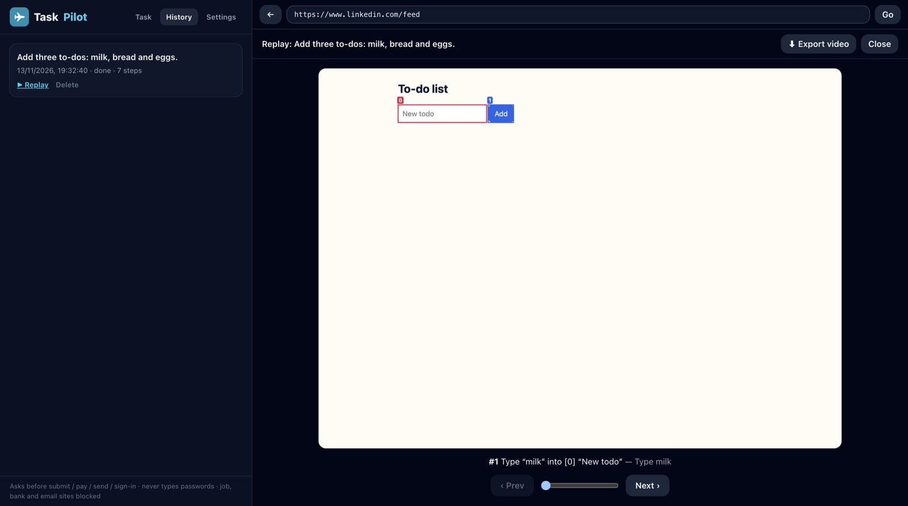

Type a task. TaskPilot opens its own browser, looks at the page, and clicks, types and scrolls until it’s done, showing every step as it goes. Before it submits, pays, sends or signs in, it stops and asks you.
Free and open source · uses your own free Gemini key · Mac, Windows, Linux
Any click that looks like submit, pay, buy, send, sign in or delete waits for your “Yes”. Pressing Enter inside a form asks too.
Passwords, OTPs, card, Aadhaar and PAN numbers are refused outright. You type those yourself.
Job portals, banks, payment and email sites are blocked by default. LinkedIn is always blocked.
A separate session with no access to your real logins. No downloads, pop-ups, camera or microphone.
A Stop button, the Esc key, a 25-step limit, and it stops by itself if it keeps repeating the same action.
Instructions hidden on a web page are ignored. Only your task counts.
Benchmark: 10 tasks on bundled practice sites (search, forms, tabs, pagination, long pages), each with an automatic check. Run it yourself with npm run bench.